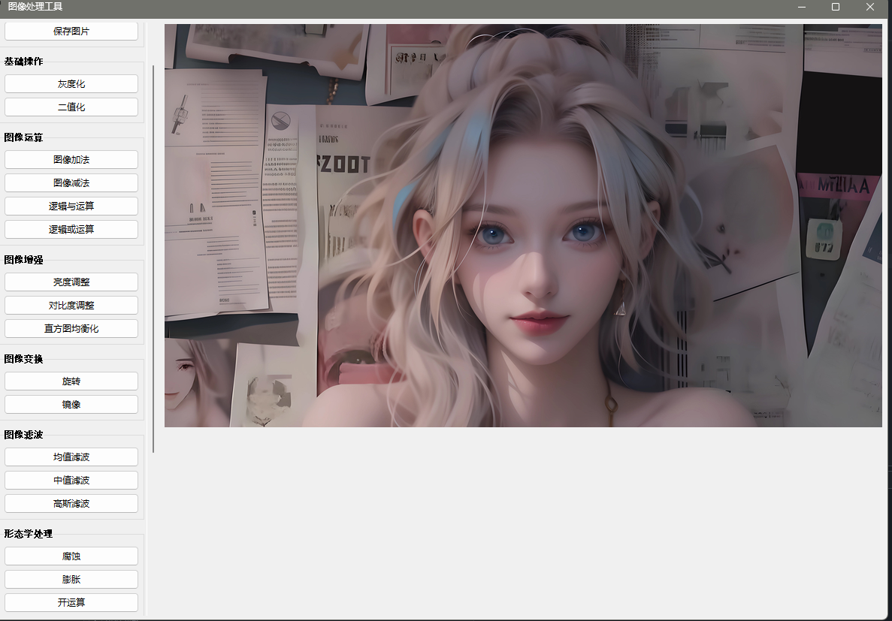

项目概述

该项目是一个功能丰富的图像处理工具，提供多种图像处理功能，包括基本的图像操作、图像增强、图像变换、滤波、形态学处理、边缘检测以及药片检测。
功能列表
数字图像处理工具
文件操作
- 打开图片：支持多种格式（.jpg, .jpeg, .png, .bmp, .gif, .tiff）
- 保存图片：将处理后的图片保存为指定格式
基础操作
- 灰度化：将彩色图像转换为灰度图像
- 二值化：将灰度图像转换为二值图像
图像运算
- 图像加法：将两张相同尺寸的图像相加
- 图像减法：将两张相同尺寸的图像相减
- 逻辑与运算：对两张相同尺寸的图像进行逻辑与运算
- 逻辑或运算：对两张相同尺寸的图像进行逻辑或运算
图像增强
- 亮度调整：通过滑块调整图像的亮度
- 对比度调整：通过滑块调整图像的对比度
- 直方图均衡化：增强图像的对比度
图像变换
- 旋转：输入角度旋转图像
- 镜像：水平、垂直或同时进行镜像变换
图像滤波
- 均值滤波：使用均值滤波器平滑图像
- 中值滤波：使用中值滤波器去噪
- 高斯滤波：使用高斯滤波器平滑图像
形态学处理
- 腐蚀：对图像进行腐蚀操作
- 膨胀：对图像进行膨胀操作
- 开运算：去除小物体
- 闭运算：填补小孔
边缘检测
- Canny边缘检测：检测图像中的边缘
- Hough直线检测：检测图像中的直线
药片检测工具
该工具实现了药片检测功能，主要包括以下步骤：
- 读取输入图像并显示
- 进行形态学处理（腐蚀）以去除噪声
- 将图像转换为灰度图并进行二值化处理
- 使用分水岭算法进行图像分割
- 统计并标记检测到的药片数量，并在图像上绘制轮廓和计数
使用说明
环境要求
确保已安装以下Python库：
pip install tkinter
pip install opencv-python
pip install numpy
pip install Pillow
pip install matplotlib
代码示例
图像处理基础功能示例
import cv2
import numpy as np
from PIL import Image, ImageTk
import tkinter as tk
from tkinter import filedialog
class ImageProcessor:
def __init__(self):
self.window = tk.Tk()
self.window.title("图像处理工具")
# 创建菜单栏
self.create_menu()
# 创建工具栏
self.create_toolbar()
def create_menu(self):
menubar = tk.Menu(self.window)
# 文件菜单
file_menu = tk.Menu(menubar, tearoff=0)
file_menu.add_command(label="打开", command=self.open_image)
file_menu.add_command(label="保存", command=self.save_image)
menubar.add_cascade(label="文件", menu=file_menu)
# 基础操作菜单
basic_menu = tk.Menu(menubar, tearoff=0)
basic_menu.add_command(label="灰度化", command=self.to_gray)
basic_menu.add_command(label="二值化", command=self.threshold)
menubar.add_cascade(label="基础操作", menu=basic_menu)
self.window.config(menu=menubar)